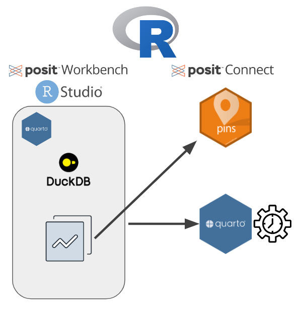

# A tibble: 66,100 × 4
province_state date state_count new_cases
<chr> <date> <dbl> <dbl>
1 Alabama 2020-01-23 0 0
2 Alabama 2020-01-24 0 0
3 Alabama 2020-01-25 0 0
4 Alabama 2020-01-26 0 0
5 Alabama 2020-01-27 0 0
6 Alabama 2020-01-28 0 0
7 Alabama 2020-01-29 0 0
8 Alabama 2020-01-30 0 0
9 Alabama 2020-01-31 0 0
10 Alabama 2020-02-01 0 0
# ℹ 66,090 more rows5 Exercise: ETL

A common data science workflow entails Extracting data, Transforming it, and then Loading (ETL) it to a location to be shared with others or consumed by other content. In this exercise, you will get practice creating an ETL workflow within Posit Team. You will also leverage the job scheduling feature in Posit Connect to ensure the data remains updated automatically.
The data for this exercise is “real” data regarding cases of COVID19 in the United States from 2020 to 2023. While this is a relatively small dataset, the ETL workflow (as shown in Figure fig-etl-workflow) is designed to work with data of all sizes! Here is a preview of the COVID dataset with an explanation of the various columns:
province_state: State or province in the United States of America.
date: Date of reporting.
state_count: Total number of confirmed COVID cases in state as of Date.
new_cases: Number of new confirmed COVID cases on Date.
5.1 Step 1 - Extract Data from DuckDB
The workshop environment comes with a DuckDB, which can be be found here: duckdb/database/demo-datasets.db. Within the DuckDB database is the COVID dataset described in sec-etl-background. The first step is to make a connection to the DuckDB and read in the COVID data using R.
All of this R code should be added to a Quarto document within the RStudio IDE on Posit Workbench.
5.1.1 Load Necessary Packages
library(DBI)
library(dplyr)
library(pins)
library(duckdb)
library(dbplyr)5.1.2 Connect to DuckDB
For this connection, we are using the DBI package in combination with the duckDB package.
con <- DBI::dbConnect(duckdb::duckdb(), dbdir = "/data/duckdb/database/demo-datasets.db")After the connection (con) has been made, you can explore the various dataset contained within the DuckDB by running:
dbListTables(con)5.1.3 Extract/Transform Covid Data
Let’s use the dplyr::tbl() function to extract the Covid data from the DuckDB connection. The tbl() makes a “pointer” to the COVID data within the DuckDB. To pull the data into our active R session and store it in memory, we need to use the dplyr::collect() function:
covid <- tbl(con, "covid") |>
# Read into memory
collect()In order to save compute resources in your R session, it’s suggested to do any type of cleaning and filtering of the data before calling the collect() function. Therefore, let’s amend the previous code and insert a transformation step before the collect() function to filter our data for a specific state/province. Feel free to substitute “Maryland” in the code below for another state/province:
covid <- tbl(con, "covid") |>
# Filter for a state/provice
filter(province_state == "Maryland") |>
# Read into memory
collect()5.2 Step 2 - Load Data to Posit Connect
Now that the data has been transformed (filtered for a specific state/province), it’s time to load the data so that other users/content can access it. For this exercise, we are going to use the popular pins package to load the data to Posit Connect.
Pinning an object to Posit Connect is a two step process. The first step is to define Posit Connect as our pinning board:
board <- pins::board_connect()For this workshop, the board_connect() function should work without supplying any arguments. When running this command in your own environment, you may need to do some configuration which is described here.
The second step is to write the data to Posit Connect as a pin. Before running the code below, take note of what your username is on the Posit Connect server. In this example, I’m using the placeholder name of publisher1, but be sure to replace this with your username!
pins::pin_write(board = board, x = covid, name = "publisher1/covid_data", type = "csv")5.3 Step 3 - Publish Workflow and Automate
Although the COVID dataset is static, from early 2020 to mid 2023, it was being updated daily. If the data changes, you’ll need to re-run the ETL workflow described above to ensure the pinned dataset reflects the latest data. This is a manual process that we can automate with the help of Posit Team!
First, click the blue deployment button at the top of the RStudio IDE:
In the subsequent pop-up window, select Posit Connect. Importantly, to re-run the quarto document on the Connect server, we need to publish document with source code:

The last step is to define the files you want to send to Connect, the Connect instance you want to publish to, and the title of the content. If everything looks good, go ahead and click Publish!

Once hosted on Connect, let’s set the Quarto document to re-run on a daily basis. We accomplish this by selecting the Schedule tab at the top. In the below configuration, the Quarto document will run every day at 9:48 am (America - New York time) and will ensure the pinned dataset is always up-to-date!

You’ll also notice at the bottom we have two options to publish the output after it is generated and send email after update. The first option ensure that the content on Posit Connect is updated after it’s scheduled to run. This is important if your content has any plots or tables that need to be updated. The second option allows you to send an email to users with a direct link to the content on Posit Connect. This is a great option to deliver insights for those that love to live in their email inbox 😁.